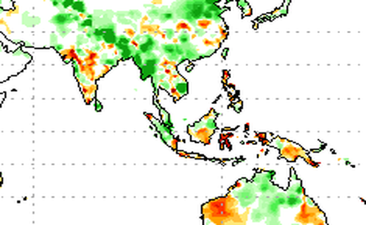
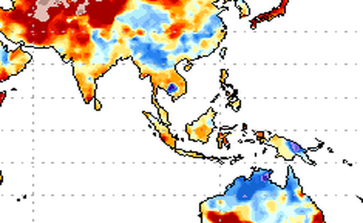
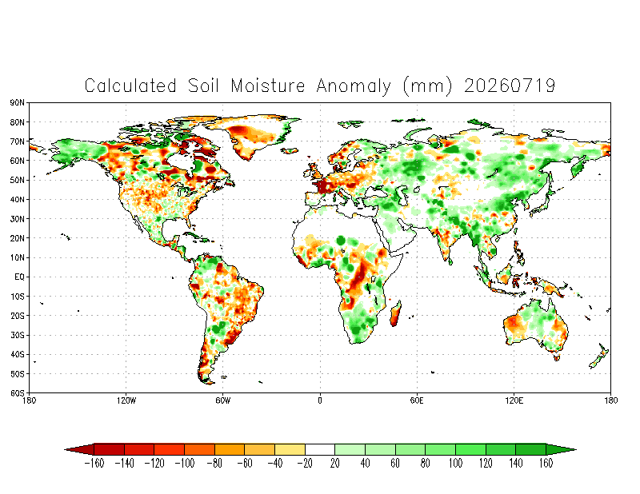
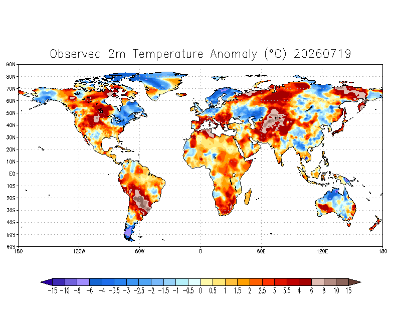

当前信号历史分位
同季节历史比较，分位越高表示供给扰动压力越强东南亚/全球土壤湿度与温度距平
只保留距平图，辅助识别偏湿 / 偏干背景
东南亚局部：CPC 当前墒情距平从 CPC 当前状态图裁剪；有效日：最新。

东南亚局部：CPC 当前温度距平从 CPC 当前状态图裁剪；有效日：最新。

CPC 全球当前土壤湿度距平当前状态图，来源：NOAA CPC；有效日：最新。

CPC 全球当前 2m 温度距平当前状态图，来源：NOAA CPC；有效日：最新。
月度矩阵摘要
预测数据说明：Actual 为已发生日度数据聚合；Mixed 为当期已发生数据与未来预测共同构成；Forecast 为未来预测值。
降雨历史与预测采用 Open-Meteo 日度降水数据按泰国橡胶主产区省份等权聚合，土壤湿度/温度距平图来自 NOAA CPC 当前状态图。预测仅用于短期扰动跟踪，不宜替代 TMD 官方月度落地口径。